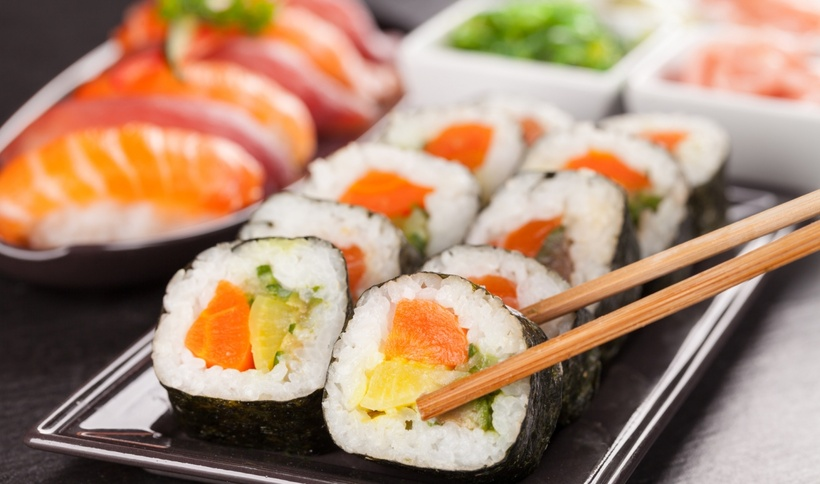

-

SUSHI
WOK, CURRY & GRILL -


BESTEL ONLINE
GRATIS LEVERING AAN HUIS
HET CONCEPT
De oorsprong van sushi ligt in de conservering van vis door het te laten fermenteren in vaten met rijst. Deze vaten werden onder druk gezet en zodoende kon de vis lang (zeker een jaar) bewaard worden. Deze methode begon in Zuidoost-Azië en verspreidde zich over rest van Azië.
Bij ons kunt u genieten van verschillende soorten sushi. U kunt à la carte kiezen of voor onze combo's die verschillende combinaties aanbieden gaan. Wij bieden ook boot menu's aan, rijk met verschillende soorten sushi voor 2, 3 of 4 personen.
Voor de liefhebbers van de warme gerechten bieden we wok-gerechten, curry's en gegrilde gerechten aan.
TERMINOLOGIE
Nigiri
Futomaki
Hosomaki
In/out
Sashimi
Welke is je favoriete sushi?